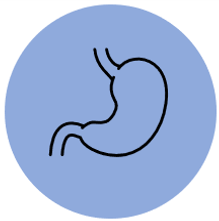

간 건강
코다리에 풍부하게 함유된 메티오닌 성분이 간세포의 활성화를 돕고
간기능 저하를 발생시키는 여러 독소를 배출시키는데 도움을 줍니다.
피부미용
코다리에 함유되어 있는 콜라겐 성분이 피부의 영양을 공급해줌으로써 탄력있는 피부를 만드는데 도움을 줍니다.
기력 회복
코다리에는 기력 향상에 도움을 주는 단백질과 에너지 대사에 많은 도움을 주는 비타민B1, 비타민B2 등 성분이 있어
피로를 풀어주고 기력을 회복하는 데 큰 효과가 있습니다.
뼈 건강
코다리에는 무기질 성분인 칼슘 및 인 등의 성분이 함유하고 있어 뼈 건강에 뛰어난 효과가 있습니다.
또한 골밀도의 약화로 발생하는 골다공증 등의 뼈질환 예방에도 이로운 작용을 합니다.
염증제거
코다리에 함유되어 있는 비타민B2의 항산화작용으로 체내 유해한 여러 독소 및 노폐물을 배출하는 데 도움을 줍니다.
특히 구내염이나 구순염 등의 구강질환들을 예방하는데 도움을 줍니다.